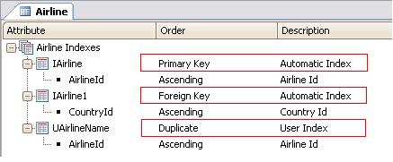

GeneXus automatically creates indices that efficiently access Tables and permits a more efficient Referential Integrity control. There are three types of indices: Primary, Foreign, and User. Primary Index: The primary index defines the primary key and it is used to control record uniqueness. It also controls, when records are created in a subordinated table, that the corresponding record exists in the superordinated table. GeneXus automatically defines all primary indices from Transactions identifiers. Foreign Index: Foreign Indices are used to make more efficient inter-table integrity controls. They are also automatically defined. When a record is removed from the subordinated table, there should be no corresponding record in the subordinated table. User Index: User Indices are mainly defined to query data in an efficient way.
 |
| Sub Categories |
| Category:Table and Index Properties |